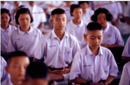

System of School
Different School
We cannot make our journey through light without some laws as "Discipline is the bridge between Goals and accomplishments" . Fortunately, this 'Different School' proclaims to have an unfailing system that runs systematically to become the PRIDE OF INDIA.
Magical Monday Meeting
You will never be sorry for doing your level best once you step into this Holy Land. It begins with a Magical Monday Meeting by 8.15 am . it is actually a 20 minutes meeting, where you stop your ears to gossips and listen to an interesting, Inspiring,Motivational Stories that follows the prayer "ANANDA EVA VIJAYADE"The well lit lobby gives a vibrancy to our Principal's principles - the work ethics to be followed by all teachers. this reminder comforts all the anxious teachers, who readily works to bring out the Uniqueness of the children. It is followed by Section Head's address to all area teachers with the call for them to become vigilant and prompt in their works. It is hard to believe that every teacher of this institution takes up an equal role with Principal in discharging duties every week. Naturally it is headed by a group of teachers every week with the turn of 9 groups the so called " Strong Pillars of Gurukulam "It brings us happiness in working in such an order to make everyday the finest memorable days with its own spicy memories. This event is considered a ceremony where the charge is handed over to the next group with "SPANDANAM" the Heart Beats of Gurukulam.
Morning Assembly
To bring cheer to all children a different atmosphere, the conventional bell system is replaced by a Musical Bell System which marks the beginning of a day of celebration. Assembly get gathered up with a song " VEENDUM PALLIKKU POGHALAM " which carries even teachers to their by gone school days. The basic components of assembly- The Pledge , The News will be conducted and The Speech during assembly assures a developing orator in every child where the current issues are commented . As per the suggestion, role numbers at random will be called the previous day and the child performs the speech the next day with ensured confidence. General warning comes as an announcement from Principal's side and with National Anthem the assembly gets dispersed. this is all about ground assembly that commences thrice a week.
Meditation
During other days we utilise our morning assembly with exclusive Meditation that we follow for more that 12 years. this five minutes is a step up to examine our conscience directing it towards Auto Suggestion for attaining perfection. Important days are remembered and revered during the assembly which provide us a track to admire the history with gracefulness.
Teachers Group
Teachers who have taken charge of respective week is solely responsible for all the activities that happens in the school. They go rounds and check whether all the classes are engaged with teachers. In absence of any teacher a substitute is arranged for. Regular Uniform, Dairy, Water bottle and bag checking happens effectively. Every intervals teachers inspect Wash Rooms of Boys as well as Girls to ensure hygenic atmosphere every where.
Teachers Group
Teachers who have taken charge of respective week is solely responsible for all the activities that happens in the school. They go rounds and check whether all the classes are engaged with teachers. In absence of any teacher a substitute is arranged for. Regular Uniform, Dairy, Water bottle and bag checking happens effectively. Every intervals teachers inspect Wash Rooms of Boys as well as Girls to ensure hygenic atmosphere every where.
Working Hours
With effective eight periods we blaze into action to bring out academic excellence. though we are tired of being tired we get into the coat of involvements once when we step into the shoes of teachers. By 3.30pm with the bell for Prayer and the National Anthem school disperses for an active tomorrow.
Watching sunset with silent care and ease we can see "chechi's" (Attenders) accompanying smiling kindergarten children to their transport facility to be back at home safely.
The nourishing refreshment for teachers provided every day by the school gives a timely revitalising energy for rest of the schools activities that proceeds till 5.00pm. from 3.30 pm to 5.00 pm all the teachers engage in various meetings like Club meeting, Subject council and Group Work plan to be executed at the nearest future.
Care Seekers
To strengthen the confidence in academic level students below average is spotted out and provided personal care and attention according to child's need. This works responsibility through out the working days other than Monday. This double's up children with confident to face challenges in academic area. Very frequently their improvement is vigilantly checked by Section Heads and a moderate development is monitored.
Charity
Children with bounteous mind has made up their ignited minds to lend their supporting little hands to the society . This inspired our children to shoot up with buddy organisation HOPE- Humans offering Paradise On Earth which is wholly maintained and run by our children with the support of teachers. Now this three year old HOPE has plunged itself to the societal need with New Face and Phase creating a space that WWW.hope
Digital class
During other days we utilise our morning assembly with exclusive Meditation that we follow for more that 12 years. this five minutes is a step up to examine our conscience directing it towards Auto Suggestion for attaining perfection. Important days are remembered and revered during the assembly which provide us a track to admire the history with gracefulness.
Parents meeting
Teachers who have taken charge of respective week is solely responsible for all the activities that happens in the school. They go rounds and check whether all the classes are engaged with teachers. In absence of any teacher a substitute is arranged for. Regular Uniform, Dairy, Water bottle and bag checking happens effectively. Every intervals teachers inspect Wash Rooms of Boys as well as Girls to ensure hygenic atmosphere every where.
Brain Empowerment programme
Teachers who have taken charge of respective week is solely responsible for all the activities that happens in the school. They go rounds and check whether all the classes are engaged with teachers. In absence of any teacher a substitute is arranged for. Regular Uniform, Dairy, Water bottle and bag checking happens effectively. Every intervals teachers inspect Wash Rooms of Boys as well as Girls to ensure hygenic atmosphere every where.
Importance of drinking water
Every period teachers takes initiation to make children drink water as it balances the mental and the physical fitness of a child.
Communicative English
"English" the Global language is made friendly to our children at rural area by a commendable service of the communicative English teachers. we are into practice for more than thirteen years that our children daringly take up chances to express themselves to win their bread and butter.